Changes in PRIMAP-hist v2.6.1_final compared to v2.6_final for Bosnia and Herzegovina
2025-03-19
Johannes Gütschow
Change analysis for Bosnia and Herzegovina for PRIMAP-hist v2.6.1_final compared to v2.6_final
Overview over emissions by sector and gas
The following figures show the aggregate national total emissions excluding LULUCF AR6GWP100 for the country reported priority scenario. The dotted linesshow the v2.6_final data.
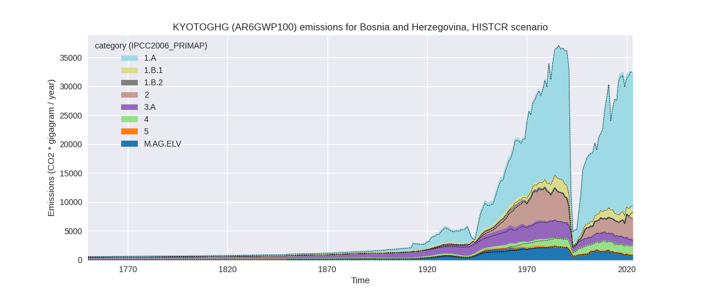
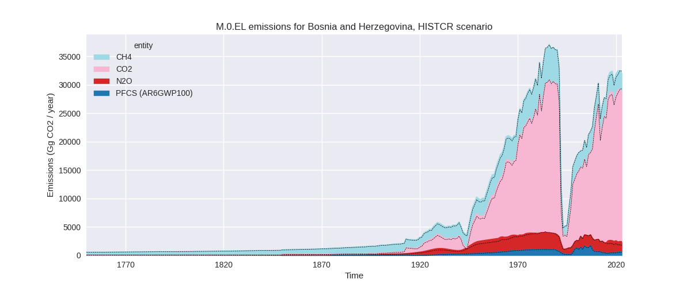
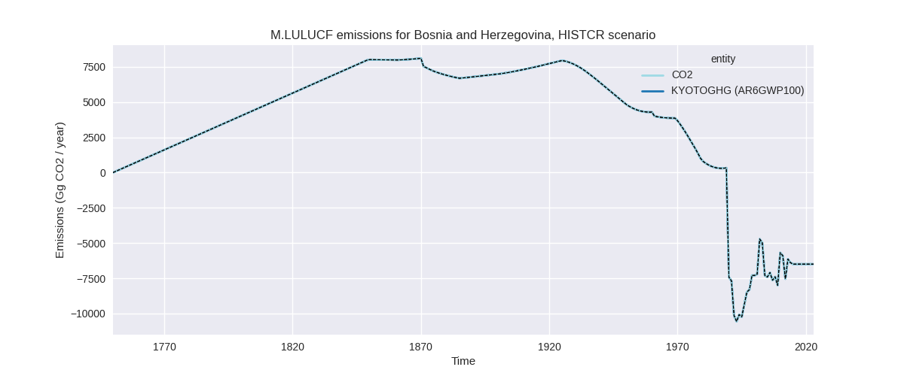
The following figures show the aggregate national total emissions excluding LULUCF AR6GWP100 for the third party priority scenario. The dotted linesshow the v2.6_final data.

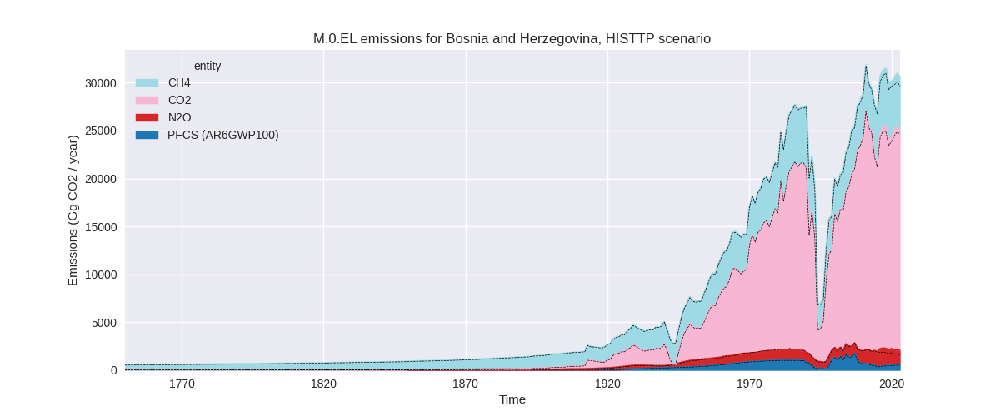
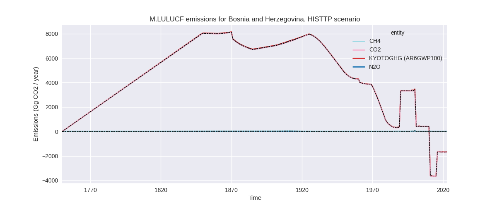
Overview over changes
In the country reported priority scenario we have the following changes for aggregate Kyoto GHG and national total emissions excluding LULUCF (M.0.EL):
- Emissions in 2023 have changed by -1.0%% (-318.22 Gg CO2 / year)
- Emissions in 1990-2023 have changed by 0.4%% (90.42 Gg CO2 / year)
In the third party priority scenario we have the following changes for aggregate Kyoto GHG and national total emissions excluding LULUCF (M.0.EL):
- Emissions in 2023 have changed by 3.2%% (938.65 Gg CO2 / year)
- Emissions in 1990-2023 have changed by 1.0%% (236.56 Gg CO2 / year)
Most important changes per scenario and time frame
In the country reported priority scenario the following sector-gas combinations have the highest absolute impact on national total KyotoGHG (AR6GWP100) emissions in 2023 (top 5):
- 1: 2, CO2 with -1426.78 Gg CO2 / year (-32.7%)
- 2: 1.A, N2O with 431.98 Gg CO2 / year (233.6%)
- 3: 1.B.1, CO2 with 349.30 Gg CO2 / year (87.2%)
- 4: 3.A, CH4 with 110.61 Gg CO2 / year (13.8%)
- 5: 2, PFCS (AR6GWP100) with 80.58 Gg CO2 / year (14.9%)
In the country reported priority scenario the following sector-gas combinations have the highest absolute impact on national total KyotoGHG (AR6GWP100) emissions in 1990-2023 (top 5):
- 1: 1.A, N2O with 110.27 Gg CO2 / year (94.0%)
- 2: 2, CO2 with -69.38 Gg CO2 / year (-4.5%)
- 3: 1.B.1, CO2 with 23.71 Gg CO2 / year (9.2%)
- 4: 2, PFCS (AR6GWP100) with 7.88 Gg CO2 / year (1.1%)
- 5: 1.B.2, CO2 with 7.64 Gg CO2 / year (1284442.0%)
In the third party priority scenario the following sector-gas combinations have the highest absolute impact on national total KyotoGHG (AR6GWP100) emissions in 2023 (top 5):
- 1: 2, CO2 with -396.83 Gg CO2 / year (-28.9%)
- 2: 1.B.1, CH4 with 368.87 Gg CO2 / year (15.5%)
- 3: 1.B.1, CO2 with 349.30 Gg CO2 / year (87.2%)
- 4: 1.A, N2O with 341.23 Gg CO2 / year (233.6%)
- 5: 3.A, CH4 with 160.22 Gg CO2 / year (13.8%)
In the third party priority scenario the following sector-gas combinations have the highest absolute impact on national total KyotoGHG (AR6GWP100) emissions in 1990-2023 (top 5):
- 1: 1.B.1, CH4 with 178.08 Gg CO2 / year (9.7%)
- 2: 1.A, N2O with 87.11 Gg CO2 / year (92.6%)
- 3: 4, CH4 with -61.26 Gg CO2 / year (-7.8%)
- 4: 1.B.1, CO2 with 23.71 Gg CO2 / year (9.2%)
- 5: 2, CO2 with -19.68 Gg CO2 / year (-3.2%)
Notes on data changes
Here we list notes explaining important emissions changes for the country.
- We have no new country reported data for Bosnia and Herzegovina. Changes in cumulative emissions are thus very small for the CR scenario. As the country reported data does not cover the latest years, changes in third party data, (EDGAR / FAO) impact 2023 emissions, especially for CO2 in 2.C, N2O in 1.A, and CO2 in 1.B.1.
- Emissions changes in the TP scenario are higher but for the same sectors and originating from the same input sources.
Changes by sector and gas
For each scenario and time frame the changes are displayed for all individual sectors and all individual gases. In the sector plot we use aggregate Kyoto GHGs in AR6GWP100. In the gas plot we usenational total emissions without LULUCF.
country reported scenario
2023
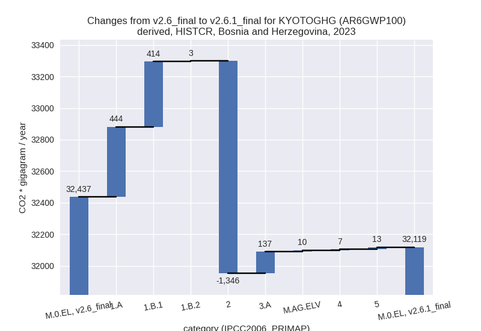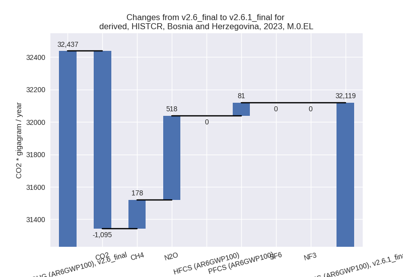
1990-2023
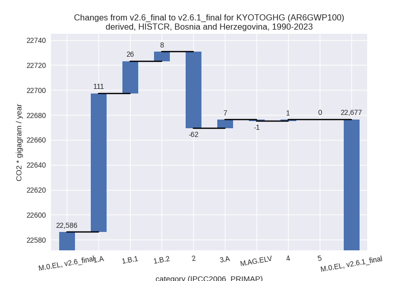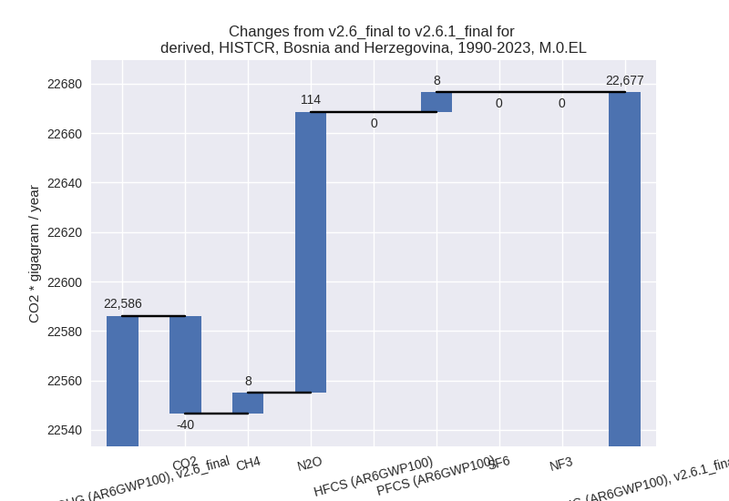
third party scenario
2023
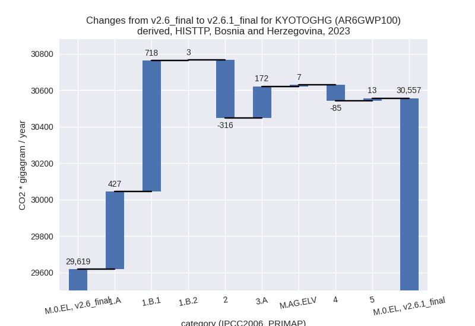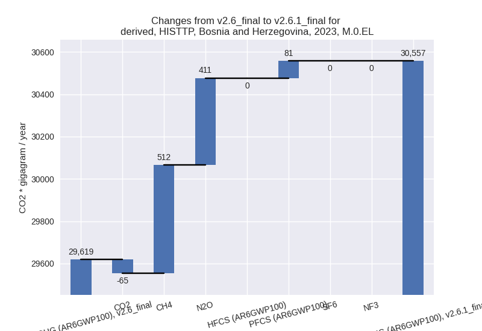
1990-2023
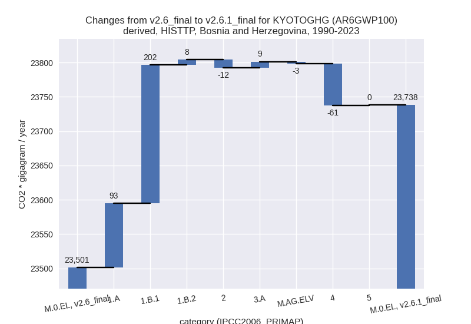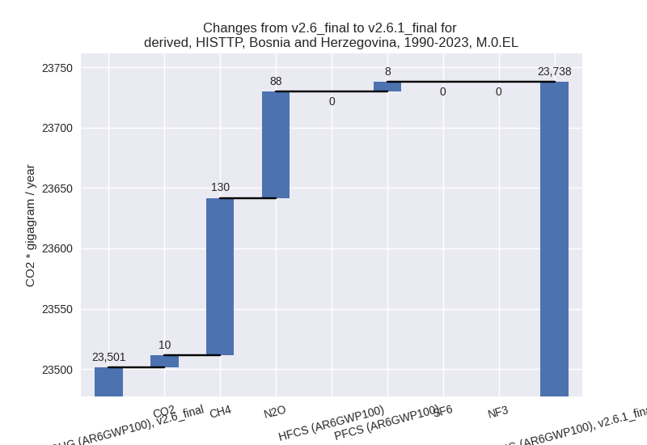
Detailed changes for the scenarios:
country reported scenario (HISTCR):
Most important changes per time frame
For 2023 the following sector-gas combinations have the highest absolute impact on national total KyotoGHG (AR6GWP100) emissions in 2023 (top 5):
- 1: 2, CO2 with -1426.78 Gg CO2 / year (-32.7%)
- 2: 1.A, N2O with 431.98 Gg CO2 / year (233.6%)
- 3: 1.B.1, CO2 with 349.30 Gg CO2 / year (87.2%)
- 4: 3.A, CH4 with 110.61 Gg CO2 / year (13.8%)
- 5: 2, PFCS (AR6GWP100) with 80.58 Gg CO2 / year (14.9%)
For 1990-2023 the following sector-gas combinations have the highest absolute impact on national total KyotoGHG (AR6GWP100) emissions in 1990-2023 (top 5):
- 1: 1.A, N2O with 110.27 Gg CO2 / year (94.0%)
- 2: 2, CO2 with -69.38 Gg CO2 / year (-4.5%)
- 3: 1.B.1, CO2 with 23.71 Gg CO2 / year (9.2%)
- 4: 2, PFCS (AR6GWP100) with 7.88 Gg CO2 / year (1.1%)
- 5: 1.B.2, CO2 with 7.64 Gg CO2 / year (1284442.0%)
Changes in the main sectors for aggregate KyotoGHG (AR6GWP100) are
- 1: Total sectoral emissions in 2022 are 25295.24 Gg
CO2 / year which is 77.7% of M.0.EL emissions. 2023 Emissions have
changed by 3.6% (861.53 Gg CO2 /
year). 1990-2023 Emissions have changed by 0.9% (144.63 Gg CO2 / year). For 2023 the
changes per gas
are:
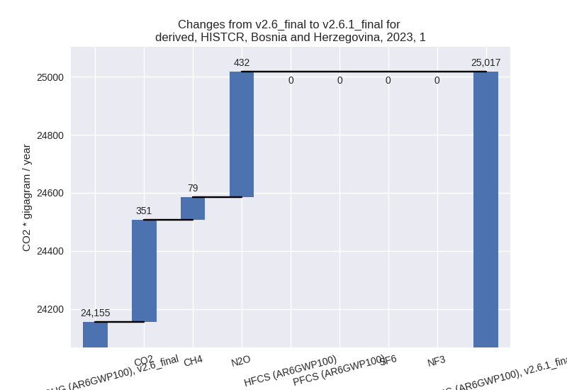
The changes come from the following subsectors:- 1.A: Total sectoral emissions in 2022 are 23739.29 Gg CO2 / year which is 93.8% of category 1 emissions. 2023 Emissions have changed by 1.9% (444.17 Gg CO2 / year). 1990-2023 Emissions have changed by 0.7% (111.19 Gg CO2 / year).
- 1.B.1: Total sectoral emissions in 2022 are 1548.08
Gg CO2 / year which is 6.1% of category 1 emissions. 2023 Emissions have
changed by 35.3% (414.42 Gg CO2 /
year). 1990-2023 Emissions have changed by 2.3% (25.81 Gg CO2 / year). For 2023 the
changes per gas
are:
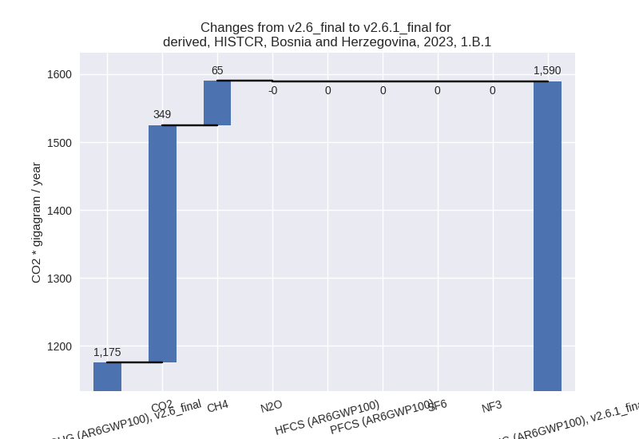
For 1990-2023 the changes per gas are:
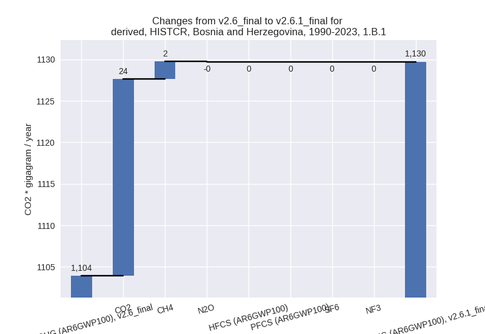
There is no subsector information available in PRIMAP-hist. - 1.B.2: Total sectoral emissions in 2022 are 7.87 Gg
CO2 / year which is 0.0% of category 1 emissions. 2023 Emissions have
changed by 59.2% (2.93 Gg CO2 /
year). 1990-2023 Emissions have changed by 87.4% (7.63 Gg CO2 / year). For 2023 the
changes per gas
are:
For 1990-2023 the changes per gas are:
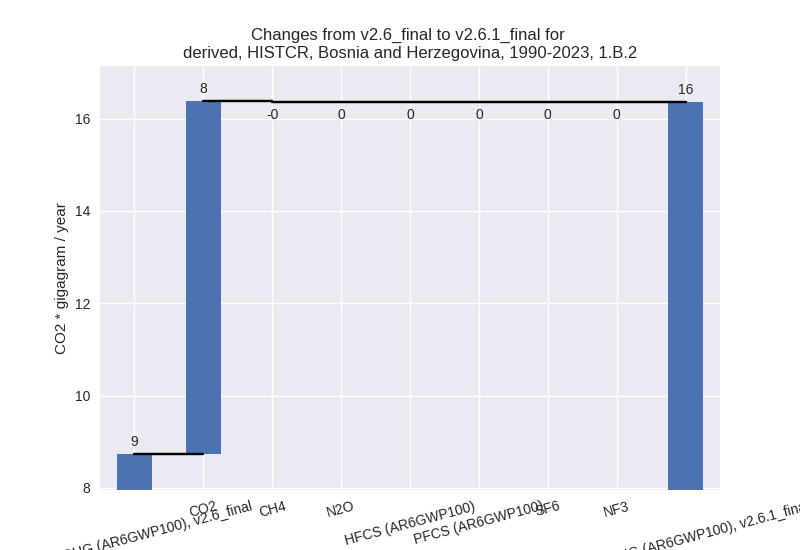
There is no subsector information available in PRIMAP-hist.
- 2: Total sectoral emissions in 2022 are 3648.93 Gg
CO2 / year which is 11.2% of M.0.EL emissions. 2023 Emissions have
changed by -27.4% (-1346.36 Gg CO2 /
year). 1990-2023 Emissions have changed by -2.7% (-61.51 Gg CO2 / year). For 2023 the
changes per gas
are:
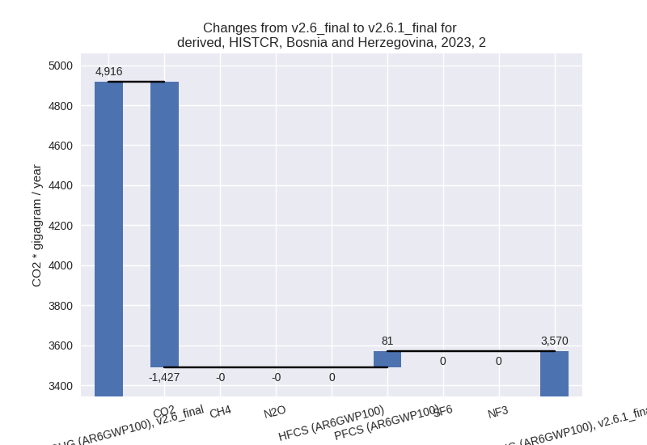
For 1990-2023 the changes per gas are:
- M.AG: Total sectoral emissions in 2022 are 1902.33
Gg CO2 / year which is 5.8% of M.0.EL emissions. 2023 Emissions have
changed by 8.7% (146.56 Gg CO2 /
year). 1990-2023 Emissions have changed by 0.2% (5.97 Gg CO2 / year). For 2023 the
changes per gas
are:
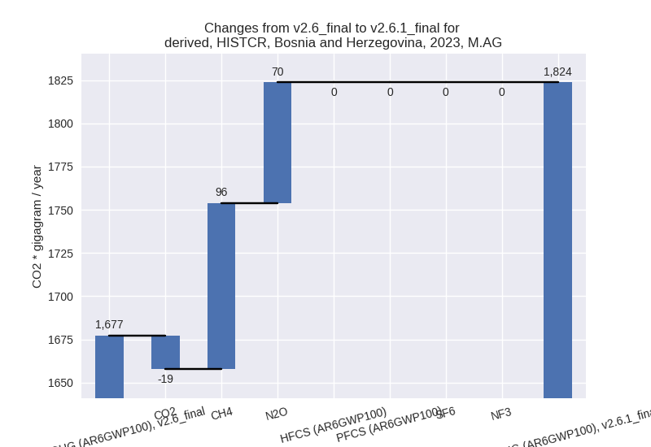
The changes come from the following subsectors:- 3.A: Total sectoral emissions in 2022 are 1169.43
Gg CO2 / year which is 61.5% of category M.AG emissions. 2023 Emissions
have changed by 14.1% (136.79 Gg CO2
/ year). 1990-2023 Emissions have changed by 0.5% (7.04 Gg CO2 / year). For 2023 the
changes per gas
are:
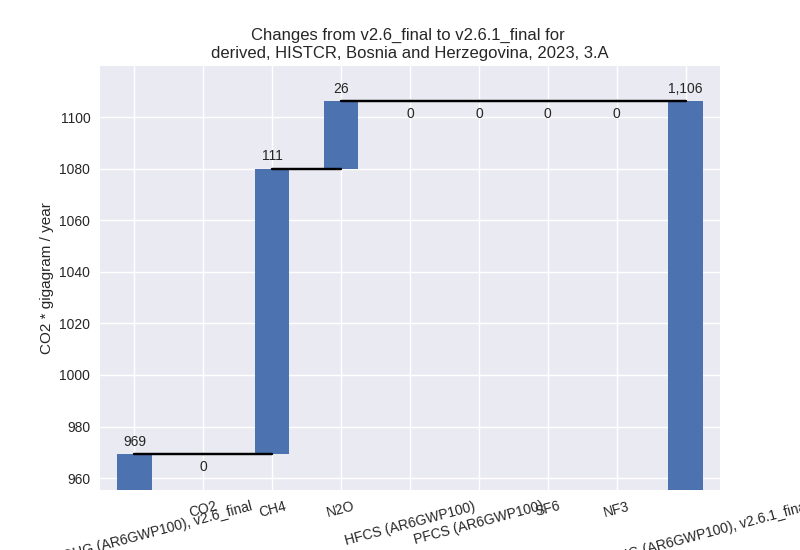
There is no subsector information available in PRIMAP-hist. - M.AG.ELV: Total sectoral emissions in 2022 are 732.89 Gg CO2 / year which is 38.5% of category M.AG emissions. 2023 Emissions have changed by 1.4% (9.77 Gg CO2 / year). 1990-2023 Emissions have changed by -0.1% (-1.07 Gg CO2 / year).
- 3.A: Total sectoral emissions in 2022 are 1169.43
Gg CO2 / year which is 61.5% of category M.AG emissions. 2023 Emissions
have changed by 14.1% (136.79 Gg CO2
/ year). 1990-2023 Emissions have changed by 0.5% (7.04 Gg CO2 / year). For 2023 the
changes per gas
are:
- 4: Total sectoral emissions in 2022 are 1601.83 Gg CO2 / year which is 4.9% of M.0.EL emissions. 2023 Emissions have changed by 0.4% (6.74 Gg CO2 / year). 1990-2023 Emissions have changed by 0.1% (1.01 Gg CO2 / year).
- 5: Total sectoral emissions in 2022 are 91.79 Gg
CO2 / year which is 0.3% of M.0.EL emissions. 2023 Emissions have
changed by 17.4% (13.31 Gg CO2 /
year). 1990-2023 Emissions have changed by 0.5% (0.32 Gg CO2 / year). For 2023 the
changes per gas
are:
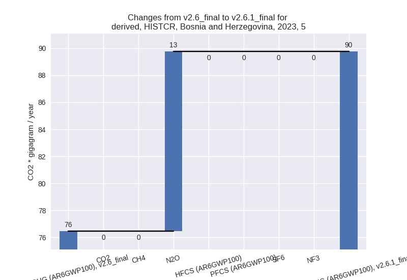
third party scenario (HISTTP):
Most important changes per time frame
For 2023 the following sector-gas combinations have the highest absolute impact on national total KyotoGHG (AR6GWP100) emissions in 2023 (top 5):
- 1: 2, CO2 with -396.83 Gg CO2 / year (-28.9%)
- 2: 1.B.1, CH4 with 368.87 Gg CO2 / year (15.5%)
- 3: 1.B.1, CO2 with 349.30 Gg CO2 / year (87.2%)
- 4: 1.A, N2O with 341.23 Gg CO2 / year (233.6%)
- 5: 3.A, CH4 with 160.22 Gg CO2 / year (13.8%)
For 1990-2023 the following sector-gas combinations have the highest absolute impact on national total KyotoGHG (AR6GWP100) emissions in 1990-2023 (top 5):
- 1: 1.B.1, CH4 with 178.08 Gg CO2 / year (9.7%)
- 2: 1.A, N2O with 87.11 Gg CO2 / year (92.6%)
- 3: 4, CH4 with -61.26 Gg CO2 / year (-7.8%)
- 4: 1.B.1, CO2 with 23.71 Gg CO2 / year (9.2%)
- 5: 2, CO2 with -19.68 Gg CO2 / year (-3.2%)
Changes in the main sectors for aggregate KyotoGHG (AR6GWP100) are
- 1: Total sectoral emissions in 2022 are 25980.02 Gg
CO2 / year which is 84.0% of M.0.EL emissions. 2023 Emissions have
changed by 4.7% (1147.41 Gg CO2 /
year). 1990-2023 Emissions have changed by 1.6% (302.78 Gg CO2 / year). For 2023 the
changes per gas
are:
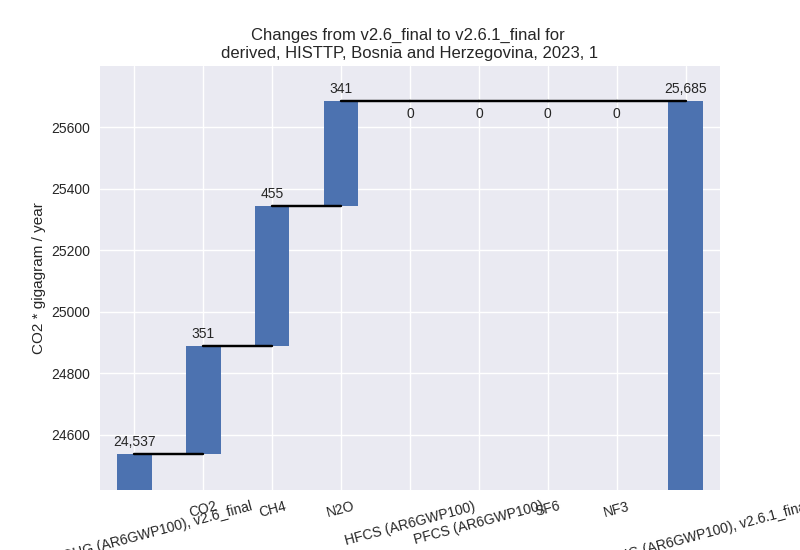
The changes come from the following subsectors:- 1.A: Total sectoral emissions in 2022 are 22467.92 Gg CO2 / year which is 86.5% of category 1 emissions. 2023 Emissions have changed by 2.0% (426.60 Gg CO2 / year). 1990-2023 Emissions have changed by 0.6% (93.38 Gg CO2 / year).
- 1.B.1: Total sectoral emissions in 2022 are 3504.23
Gg CO2 / year which is 13.5% of category 1 emissions. 2023 Emissions
have changed by 25.8% (717.89 Gg CO2
/ year). 1990-2023 Emissions have changed by 9.7% (201.78 Gg CO2 / year). For 2023 the
changes per gas
are:
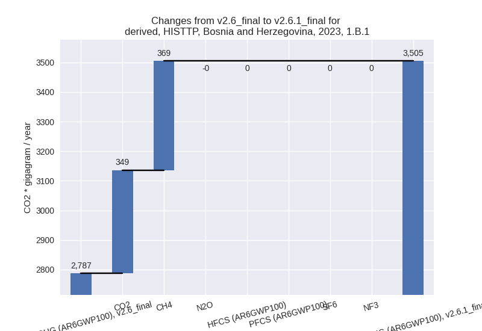
For 1990-2023 the changes per gas are:
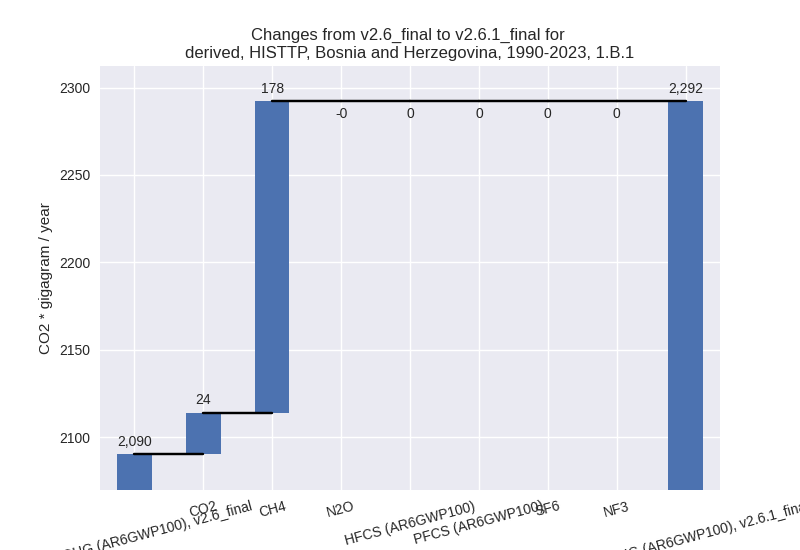
There is no subsector information available in PRIMAP-hist. - 1.B.2: Total sectoral emissions in 2022 are 7.87 Gg
CO2 / year which is 0.0% of category 1 emissions. 2023 Emissions have
changed by 59.2% (2.93 Gg CO2 /
year). 1990-2023 Emissions have changed by 87.4% (7.63 Gg CO2 / year). For 2023 the
changes per gas
are:
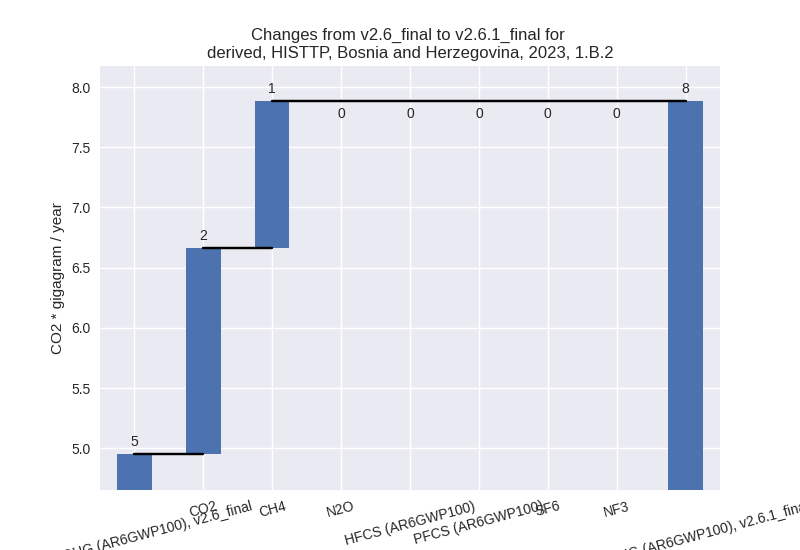
For 1990-2023 the changes per gas are:
There is no subsector information available in PRIMAP-hist.
- 2: Total sectoral emissions in 2022 are 1611.90 Gg
CO2 / year which is 5.2% of M.0.EL emissions. 2023 Emissions have
changed by -16.4% (-316.42 Gg CO2 /
year). 1990-2023 Emissions have changed by -0.9% (-11.81 Gg CO2 / year). For 2023 the
changes per gas
are:
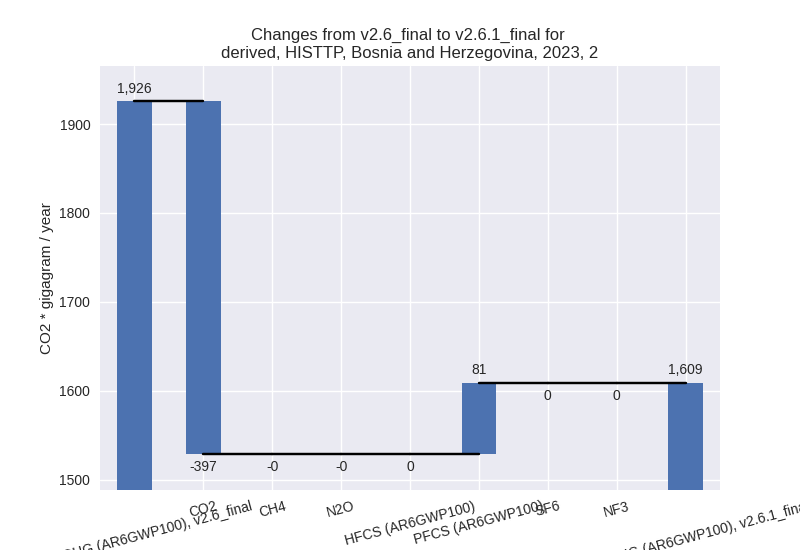 - M.AG: Total sectoral emissions in 2022 are 2178.86
Gg CO2 / year which is 7.0% of M.0.EL emissions. 2023 Emissions have
changed by 9.4% (179.75 Gg CO2 /
year). 1990-2023 Emissions have changed by 0.2% (6.11 Gg CO2 / year). For 2023 the
changes per gas
are:
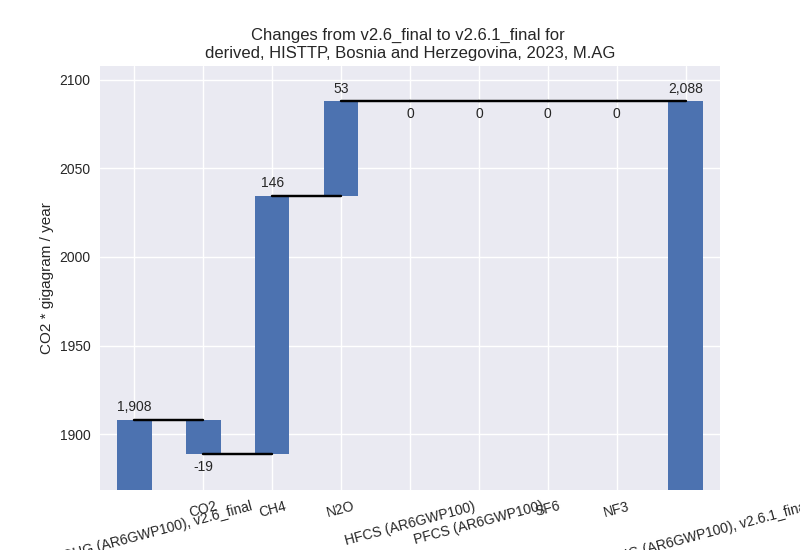
The changes come from the following subsectors:- 3.A: Total sectoral emissions in 2022 are 1486.27
Gg CO2 / year which is 68.2% of category M.AG emissions. 2023 Emissions
have changed by 13.9% (172.45 Gg CO2
/ year). 1990-2023 Emissions have changed by 0.5% (8.85 Gg CO2 / year). For 2023 the
changes per gas
are:

There is no subsector information available in PRIMAP-hist. - M.AG.ELV: Total sectoral emissions in 2022 are 692.59 Gg CO2 / year which is 31.8% of category M.AG emissions. 2023 Emissions have changed by 1.1% (7.29 Gg CO2 / year). 1990-2023 Emissions have changed by -0.4% (-2.74 Gg CO2 / year).
- 3.A: Total sectoral emissions in 2022 are 1486.27
Gg CO2 / year which is 68.2% of category M.AG emissions. 2023 Emissions
have changed by 13.9% (172.45 Gg CO2
/ year). 1990-2023 Emissions have changed by 0.5% (8.85 Gg CO2 / year). For 2023 the
changes per gas
are:
- 4: Total sectoral emissions in 2022 are 1074.37 Gg
CO2 / year which is 3.5% of M.0.EL emissions. 2023 Emissions have
changed by -7.3% (-85.40 Gg CO2 /
year). 1990-2023 Emissions have changed by -6.6% (-60.85 Gg CO2 / year). For 2023 the
changes per gas
are:
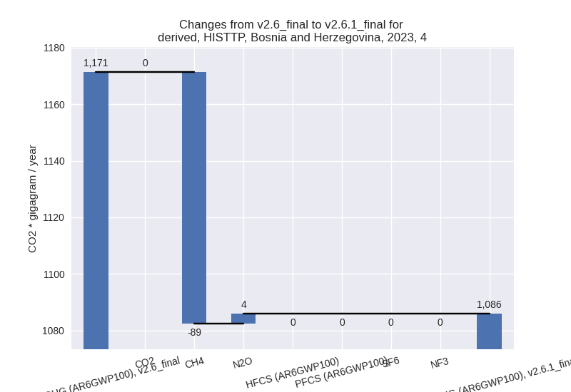
For 1990-2023 the changes per gas are:
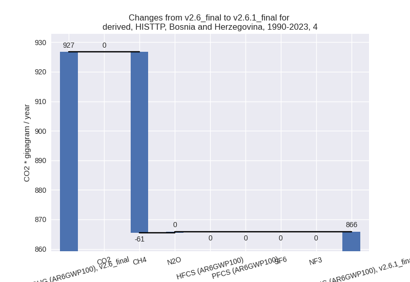 - 5: Total sectoral emissions in 2022 are 91.79 Gg
CO2 / year which is 0.3% of M.0.EL emissions. 2023 Emissions have
changed by 17.4% (13.31 Gg CO2 /
year). 1990-2023 Emissions have changed by 0.5% (0.32 Gg CO2 / year). For 2023 the
changes per gas
are: